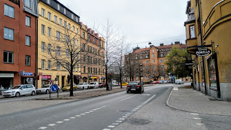
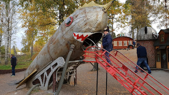

Solna : Arena, romance, castle, palace and church

Lovon : Nature reserve, hiking, lake and palace

Coffin

Sundbyberg : Nature Reserve
Stockholm : Built on 14 islands, with old town,castels, museums and shops
Södermalm : Shopping
Drottningholm : Palace, theater, castle and opera
LakeMalaren : Lake, castle, sailing and palace
Solna : Arena, romance, castle, palace and church
Lovon : Nature reserve, hiking, lake and palace
Coffin
Sundbyberg : Nature Reserve

Dwell : Nature Reserve
Sodertorn : Wolf, nature reserve and history
Drevviken : Nature reserve, lake and fishing
Farsta Strand : Nature and beach
Hasselby Villastad
Spanga
Skarpnack : Nature and lake